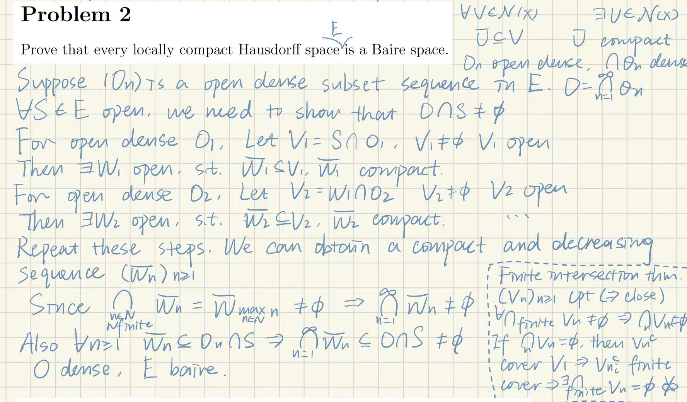
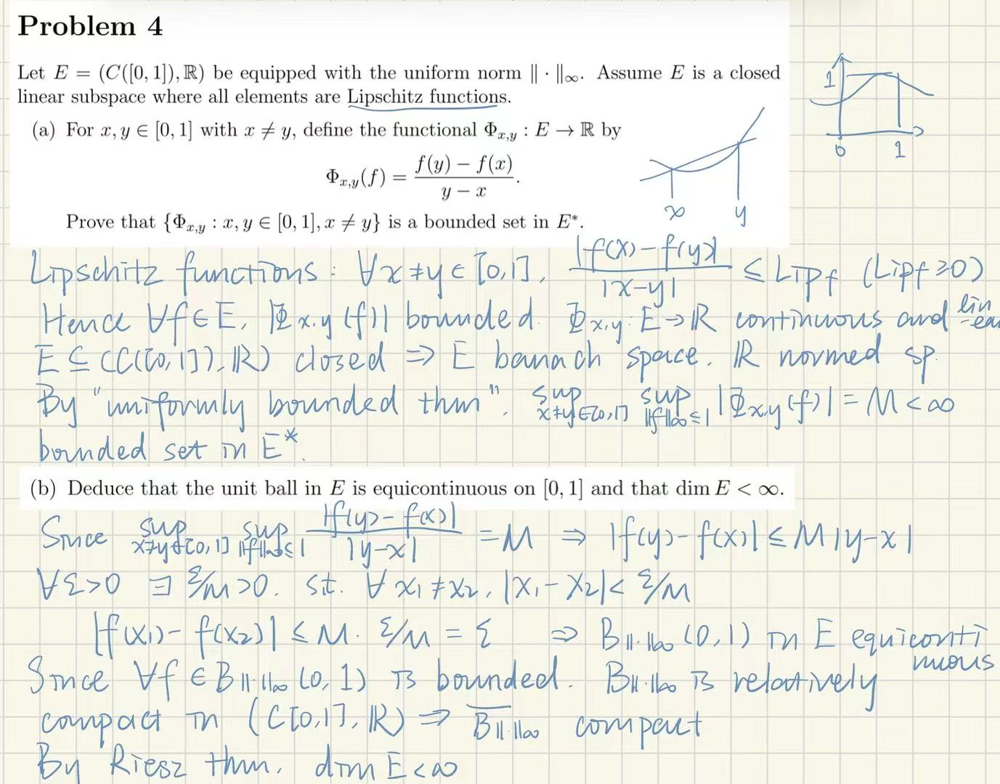

Baire空间、一致有界性原理
整理自泛函分析（gl）课堂笔记。
我觉得这个定理非常的NB，这一节的证明还很拓扑，能忍住不学的也是神人了。
封面图：利兹与青鸟 剧场版
Baire定理(开集交)
设$(E,d)$是完备度量空间，$(O_n)_{n\ge1}$是E中的一列开稠密子集，**那么$O=\bigcap_{n\ge 1} O_n$在E中稠密**。
证明：(利用归纳构造，造出一系列有内点的递减闭集，最后在完备空间E中使用闭集套)
即证$\forall U\subseteq O,\quad U\cap O\neq\emptyset$.
因为$O_1$开稠密，所以$U\cap O_1$非空且为开集，那么$\exists B(x_1,r_1)\subseteq U\cap O_1$. 取交中的闭子集$F_1=\overline{B(x_1,\tilde{r_1})},\quad \tilde{r_1}=\min\{\frac{r_1}{2},\frac{1}{2}\}$，则$diam~F\le1$.
由于$O_2$开稠密，$\mathring{F_1}\cap O_2\neq\emptyset$且开，继续找出$B(x_2,r_2)\subseteq\mathring{F_1}\cap O_2$. 取闭子集$F_2=\overline{B(x_2,\tilde{r_2})}\subseteq\mathring{F_1}\cap O_2\subseteq U\cap O_1\cap O_2$, $\tilde{r_2}=\min\{\frac{r_2}{2},\frac{1}{2^2}\}$, $diam~F_2\le\frac{1}{2}$
重复以上的操作，我们获得了一序列递减的闭集$F_n$，$diam F_n\le\frac{2}{2^n}$，且内部非空，$F_n\subseteq U\cap\bigcap_{k\ge1}O_k$.
使用闭集套定理：完备空间E中，$\bigcap_{n\ge1}F_n=\{x\}$，故$U\cap O\neq\emptyset$，O在E中稠密。
我们把开稠密子集可数交仍然稠密的拓扑空间称作**Baire空间**。
类似的，局部紧豪斯多夫空间也是Baire空间，证明过程类似

Baire定理：完备度量空间是Baire空间
Baire空间的开子集还是Baire空间。
Baire空间闭集并
Baire空间的等价闭集表述：E是Baire空间当且仅当 任一E中的无内部闭集列$(F_n)$，其可数并内部仍为空。
这个定义也很重要，在下面很多定理证明都要用，一般用法是我们先找到一列闭集，其并为全空间，那么列中一定至少有一个闭集有内部。
E是Baire空间，$(F_n)_{n\ge1}$是E的闭子集序列，且$E=\bigcup_{n\ge1}F_n$，那么$\bigcup_{n\ge1}\mathring{F_n}$在E中稠密
证明：任取E中的开集U。
$$U=U\cap E=U\cap(\bigcup_{n\ge1}F_n)=\bigcup_{n\ge1}(U\cap F_n)$$
等式两侧同时取内部
$$U=\mathring{\bigcup_{n\ge1}(U\cap F_n)}\neq\emptyset$$
由于U Baire，$\exists n_0$使得$\mathring{U\cap F_{n_0}}=U\cap \mathring{F_{n_0}}\neq\emptyset$, 进而$U\cap(\bigcup_{n\ge1}\mathring{F_n})\neq\emptyset$，故$\bigcup_{n\ge1}\mathring{F_n}$稠密
贫与剩余
可数个开集的交称为$G_\delta$集，可数个闭集的并称为$F_\sigma$集
被$F_\sigma$集包含且无内部的集合称为贫集(meagre)
对应测度论中的零测集
包含稠密$G_\delta$集的集合称为剩余集(residual)
对应测度论中几乎处处
贫与剩余互为补集关系
连续函数逐点极限
E是Baire空间，$(F,\delta)$是度量空间，令$(f_n)_{n\ge1}\subseteq C(E,F)$是连续函数序列，且$f_n$逐点收敛至$f$
那么$cont(f)=\{x\in E| f~continuous~on~x\}$是剩余集。
证明：对$\forall N,k\ge1$，定义（振幅控制集合，我自己乱说的，意思就是这些点的振幅被1/k控制住了）
$$F_{N,k}=\{x\in E|\delta(f_n(x),f_m(x))\le\frac{1}{k},\forall n,m\ge N\}=\bigcap_{n,m\ge N}\{x\in E|\delta(f_n(x),f_m(x))\le\frac{1}{k}\}$$
由于$f_n$连续，$F_{N,k}$闭。由于$f_n$逐点收敛，所以对于对每个点，函数值都是柯西列，也就是$E=\bigcup_{N\ge1}F_{N,k}\quad\forall k\ge1$.
由于E是Baire空间，$O_k=\bigcup_{N\ge 1}\mathring{F_{N,k}}$稠密开，且$O=\bigcap_{k\ge1}O_k=\bigcap_{k\ge1}\bigcup_{N\ge 1}\mathring{F_{N,k}}$稠密。
接下来证明$O\subseteq cont(f)$(又到了常见的利用连续函数工具人搭桥证连续的时候了)
取$\forall x\in O=\bigcap_{k\ge1}\bigcup_{N\ge 1}\mathring{F_{N,k}}$，那么$\forall k\ge1,\exists N_k\ge1$使得$x\in\mathring{F_{N_k k}}\subseteq F_{N_k k}$，也就是$\forall m,n\ge N_k,\delta(f_n(x),f_m(x))\le\frac{1}{k}$
对于任意的$\varepsilon>0$，找到k使得$\frac{1}{k}\le\varepsilon$，与$U_x\in\mathcal{N}(x)$使得$\forall y\in U_x,\delta(f_{N_k}(y),f_{N_k}(x))\le\varepsilon$
对于任意$x\in U_x\cap\mathring{F_{N_k k}}$(使用传统搭桥法)
$$\delta(f(x),f(y))\le\delta(f(x),f_{N_k}(x))+\delta(f_{N_k}(x),f_{N_k}(y))+\delta(f_{N_k}(y),f(y))\le3\varepsilon$$
故$O\subseteq cont(f)$
连续函数的逐点极限被称为第一Baire纲(class)
一致有界性原理
[!tip] 引理
E是豪斯多夫拓扑空间，$(F,\delta)$是度量空间，$F:E\to F$，则$cont(f)$是$G_\delta$集
证明：定义f的振荡函数，用来描述间断距离，连续iff振荡函数是0
$$w(f)(x)=\inf_{V\in\mathcal{N}(x)}\sup_{z,y\in V}\delta(f(z),f(y))$$
$$cont(f)=\bigcap_{k\ge1}\{x\in E|w(f)(x)<\frac{1}{k}\}:=\bigcap_{k\ge1}O_k$$
只需证$O_k$开。$\forall x\in O_k,\exists V\in\mathcal{N}(x)$是开集且使得$\sup_{x,y\in V}\delta(f(x),f(y))<\frac{1}{k}$。
$\forall x'\in V$，则$w(f)(x')\le\sup_{x,y\in V}\delta(f(x),f(y))<\frac{1}{k}$。故$x'\in O_k$，$cont(f)$是$G_\delta$集。
**一致有界性原理(Banach-Steinhauss Thm)**
E是Banach空间，F是赋范空间，$B_E=\{x\in E;||x||<1\}$，$\overline{B_E}=\{x\in E;||x||\le1\}$，$B(E,F)$是从E到F的所有连续线性映射，其中映射的范数$||u||=\sup_{x\in B_E}||u(x)||$。
令$(u_i)_{i\in I}\subseteq B(E,F)$，若$\forall x\in E,\quad M(x)=\sup_{i\in I}||u_i(x)||<\infty$，则$\sup_{i\in I}||u_i||<\infty$
证明：令
$$F_n=\bigcap_{i\in I}\{x\in E ;||u_i(x)||\le n\}=\{x\in E; M(x)\le n\}$$
由于$u_i$连续，所以$F_n$闭，由于$u_i(x)$有上界，所以$E=\bigcup_{n\ge1}F_n$。使用Baire空间的闭集并等价定义
$\exists n_0$使得$\mathring{F_{n_0}}\neq\emptyset$，也即$\exists x_0\in E\quad r>0\quad B_E(x_0,r)\subseteq \mathring{F_{n_0}}$
则$\forall x\in B_E(o,r),\quad||u_i(x_0+x)||\le n_0(\forall i\in I)$
$$\forall x\in B_E(0,r),\quad ||u_i(x)||\le||u_i(x_0)||+n_0\le M(x_0)+n_0$$
$$\forall x\in B_E\quad||u_i(x)||\le\frac{1}{r}(M(x_0)+n_0)\Rightarrow\sup_{i\in I}\sup_{x\in B_E}||u_i(x)||<\infty$$
用这个定理可以证明一些非常bt的结论

共鸣定理/奇性聚集原理
一致有界性原理的逆命题为共鸣定理，不过我们还可以将其进一步加强，称为**奇性聚集原理**
E是Banach空间，F是赋范空间，$(u_i)_{i\in I}\subseteq B(E,F)$
若$\sup_{i\in I}||u_i||=\infty$，那么$G=\{x\in E; M(x)=\infty\}$是E上的稠密$G_\delta$集
证明：$F_n$定义如B-S定理所述，故$G=\bigcap_{n\ge1}F_n^c$，$G_\delta$易得。假设G不稠密，那么由于E是Baire的，$\exists n_0$使得$F_{n_0}^c$不稠密，也即$\exists O~open\quad B(x_0,r)\subseteq F_{n_0}$，此时重复B-S定理证明过程后半段，可得$\sup_{i\in I}||u_i||<\infty$，矛盾
范数下半连续
一致有界性原理的实用推论
$(u_i)_{i\in I}\subseteq B(E,F)$，E是Banach空间
若$u_n$逐点收敛至$u$，则$u\in B(E,F)$且$||u||\le\liminf_{n\to\infty}||u_n||$
证：由逐点收敛可知$\forall x,\{u_n(x)\}$有界，故$\forall x\in E\quad\sup_n||u_n(x)||<\infty$
由一致有界性原理可知$\sup_n||u_n||<\infty$，故$c=\liminf_{n\to\infty}||u_n||<\infty$
令$x\in B_E$，因为$u(x)=\lim_{n\to\infty} u_n(x)$，故有
$$||u(x)||=\lim_{n\to\infty}||u_n(x)||=\liminf_{n\to\infty}||u_n(x)||\le(\liminf_{n\to\infty}||u_n||)||x||\le C||x||$$
故$u\in B(E,F)$且$||u||\le\liminf_{n\to\infty}||u_n||$.